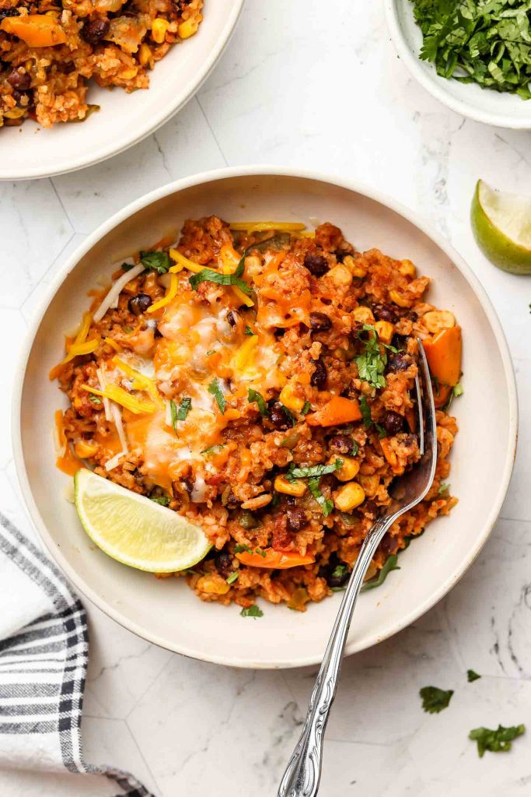

Vegan Burrito Bowls

My attempt at burrito bowls
Excellent source of protein that tastes great
Makes four servings
Ingredients
- 12oz Impossible meat
- 2 15oz Canned black beans
- 2 Diced Green Bell Peppers
- 1 Diced Onion
- 2 Servings of my Taco Seasoning
- Rice
- 7oz Vegan Cheddar
Instructions
- Begin by heating two pans to medium-high heat
- Add impossible meat to one pan and peppers/onions to the other
- Break up impossible and continue stirring both pans until desired doneness
- Add a serving of taco seasoning to each pan
- Add 2/3 cup water to impossible meat
- Add black beans to pan of peppers and onion
- Simmer both pans until desired level of moisture
- Serve a scoop of beans and beef on a bed of white rice
- Sprinkle with vegan cheddar cheese and serve